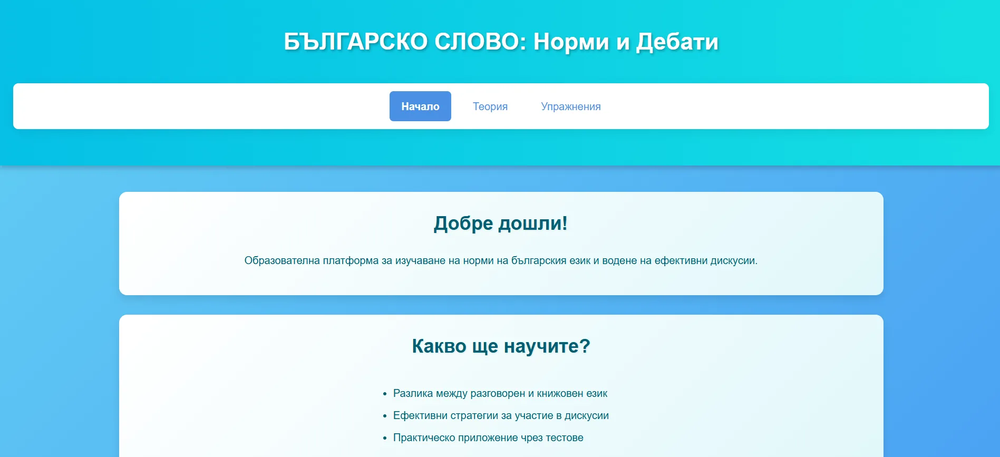

Разпръснато и неструктурирано учебно съдържание
Езиковите правила често са описани в тежки учебници или са разпиляни из различни уеб ресурси, което затруднява бързата справка и подготовката за изпити или дебати.
Бизнес уебсайтове / образователен сайт
Образователен сайт, който структурира съдържание за езикови норми и дебати в достъпен формат.
Демо проект
ЗА ПРОЕКТА
Bulgarian Talk Norms представлява образователен уебсайт, създаден за структуриране и достъпно представяне на информация за българските книжовни норми, граматични правила и академични дебати. Системата предлага лесна и бърза навигация между учебните теми и е оптимизирана за бързо зареждане на всякакви устройства.
Езиковите правила често са описани в тежки учебници или са разпиляни из различни уеб ресурси, което затруднява бързата справка и подготовката за изпити или дебати.
Уебсайт с ясна структура на съдържанието, бърз достъп до граматични секции, примери и структурирани ръководства, разгърнати в статичен формат за оптимална скорост.
ФУНКЦИОНАЛНОСТИ
Разделяне на учебното съдържание по раздели — правопис, правоговор и пунктуация.
Специализирана секция с правила за водене на дебати и структуриране на аргументи.
Сравнителни таблици с често допускани грешки и техните правилни книжовни форми.
Оптимално подредена структура на текстовете за правилно четене от екранни четци.
Изчистен интерфейс с фокус върху съдържанието, без излишни реклами и банери.
Статичен сайт с минимален код, който се отваря мигновено на всякакви мобилни устройства.
ПРОЦЕС
ТЕХНОЛОГИИ
Bulgarian Talk Norms показва способността на KoveForge да изгражда чисти и леснодостъпни образователни ресурси:
Опиши ни процеса, който искаш да дигитализираш. Ще ти предложим ясна първа стъпка.